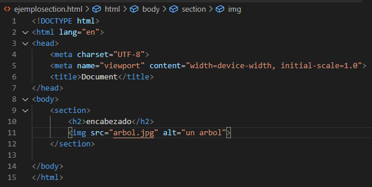
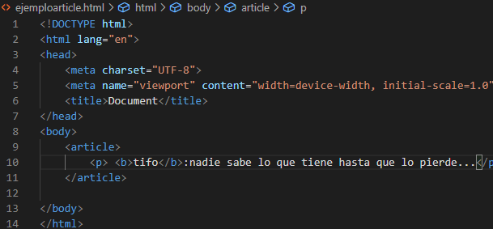

recursos
→Inicio
→section(seccion)
→article(articulo)
→aside(aparte)
→footer(pie de pagina)
→Recursos section y article
→Recursos aside y footer
→Autoevaluacion
→Autor
ejemplo section en html5→

ejemplo article en html5→

podcast